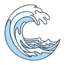

Gabriel Medina
3x Campeão Mundial
Gabriel Medina é um dos maiores nomes da história do surfe mundial. Natural de Maresias (SP), ele revolucionou o esporte no Brasil ao se tornar o primeiro brasileiro a conquistar um título mundial da WSL, em 2014.
Gabriel Medina é um dos maiores nomes da história do surfe mundial. Natural de Maresias (SP), ele revolucionou o esporte no Brasil ao se tornar o primeiro brasileiro a conquistar um título mundial da WSL, em 2014.
Ítalo Ferreira natural de Baía Formosa (RN), em 2019, foi campeão mundial e, em 2021, fez história novamente ao conquistar o primeiro ouro olímpico da história do surfe.
Com um estilo agressivo Tatiana se consolidou como uma das surfistas mais respeitadas do circuito da WSL. Em 2021, alcançou o vice-campeonato mundial, sendo a primeira brasileira a chegar tão perto do topo.
Se você der o seu máximo, viver com verdade e inspirar apenas uma vida, já será uma referência maior do que imagina. Grandeza não está só nos troféus — está nos gestos que tocam o mundo.

Nunca é tarde para sentir a liberdade de uma onda. Nosso espaço é feito para todas as idades — seja você iniciante, veterano ou alguém que está redescobrindo um sonho antigo.
